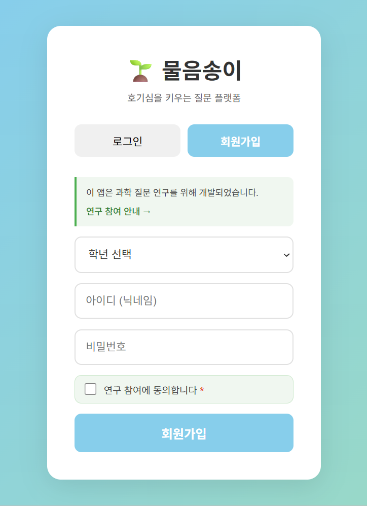
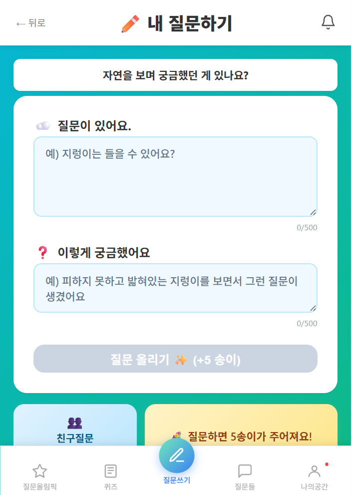
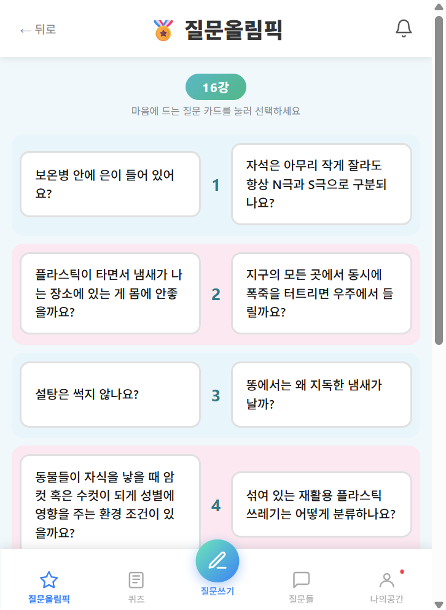
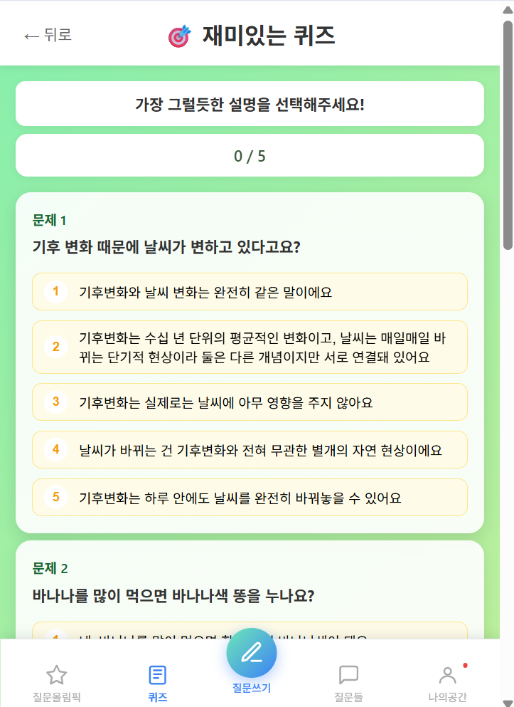
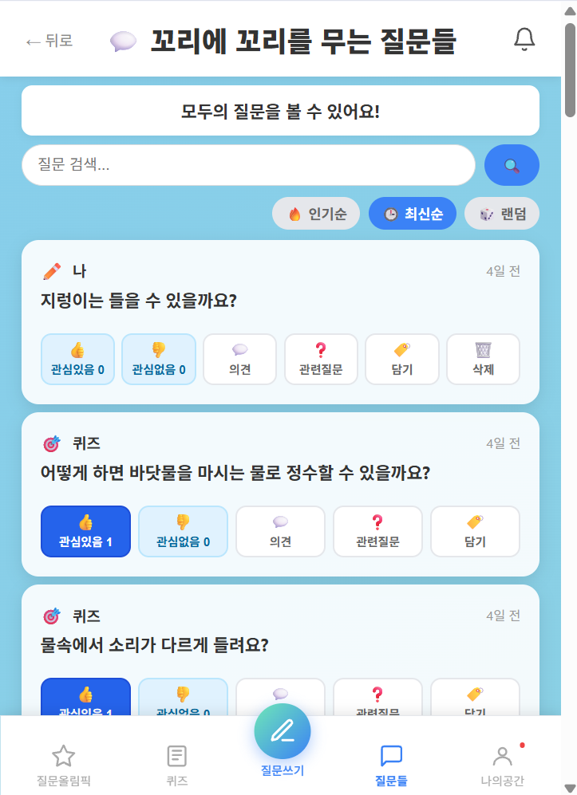
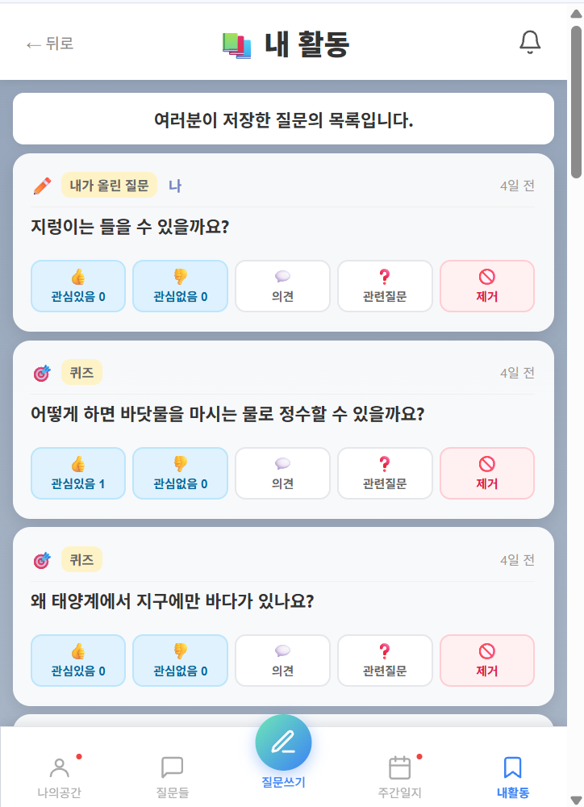
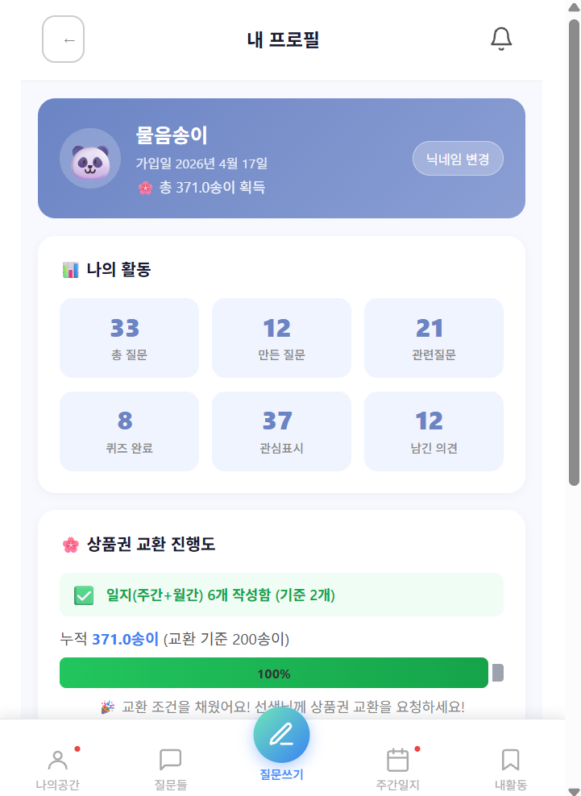

가입은 30초, 시작은 질문 하나면 충분해요.
실제 화면을 따라가며 물음송이가 어떻게 흘러가는지 확인해 보세요.
아이디와 비밀번호, 학년만 선택하면 준비 완료예요. 복잡한 절차 없이 바로 질문 여정을 시작할 수 있어요.
⏱️ 30초면 충분해요
"자연을 보며 궁금했던 게 있나요?" 같은 질문에 답하듯, 궁금한 것과 왜 궁금했는지를 자유롭게 적어보세요.
🌸 질문 하나 올리면 +5 송이
여러 질문 카드 중에서 가장 마음에 드는 걸 골라 나가요. 토너먼트처럼 라운드를 거치며 어떤 질문이 더 궁금한지 겨뤄봐요.
🏅 나의 호기심 취향이 드러나요
정답을 맞히는 게 아니라, "가장 그럴듯한 설명"을 골라보는 퀴즈예요. 과학적으로 생각하는 감각을 자연스럽게 길러줘요.
🎯 다양한 분야의 질문이 매주 바뀌어요
다른 참여자들이 올린 질문을 둘러보고, 관심있음/없음으로 반응하거나 의견을 남기고, 궁금한 질문을 저장할 수 있어요.
💬 같은 궁금증을 가진 친구를 만나요
내가 올린 질문과 저장해둔 질문들을 모아볼 수 있어요. 그동안 어떤 것들이 궁금했는지 돌아보는 재미가 있어요.
📚 나만의 질문 기록장
질문하고, 퀴즈 풀고, 일지를 쓸 때마다 송이가 쌓여요. 일정 기준을 채우면 소정의 상품권으로 교환할 수 있어요.
🎁 2주마다 약 1,000원 상당의 보상
일상생활에서 자연현상에 대해 궁금했던 것이라면 무엇이든 질문해 보세요.
같은 궁금증을 가진 친구들과 질문을 나누고 생각을 넓혀 보아요.